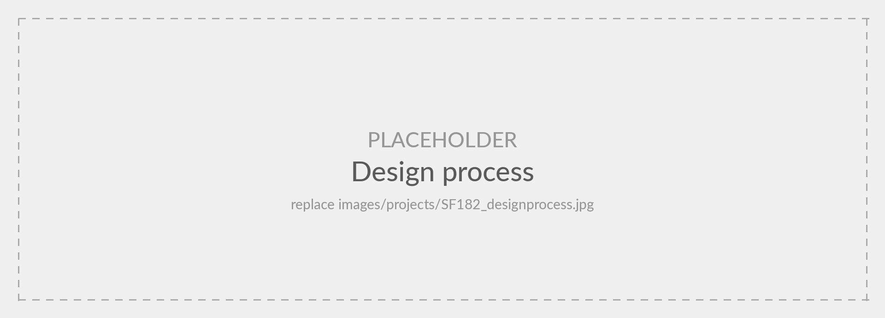
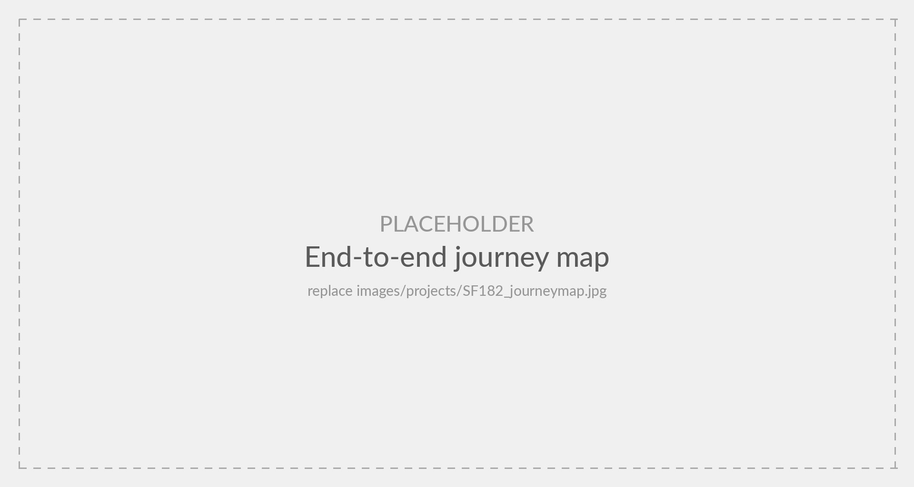
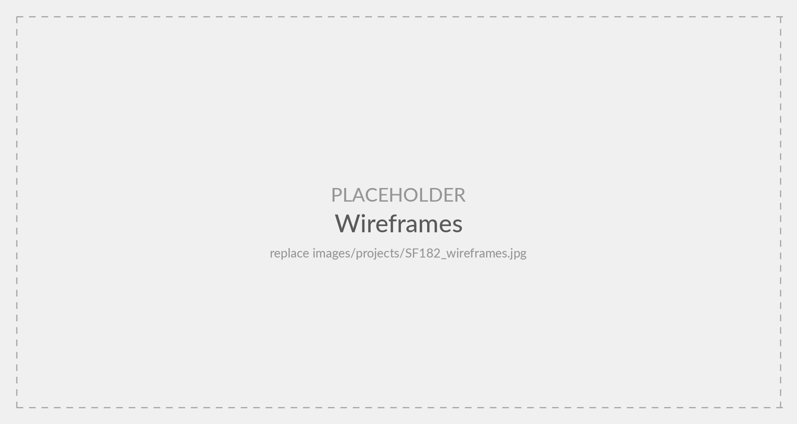
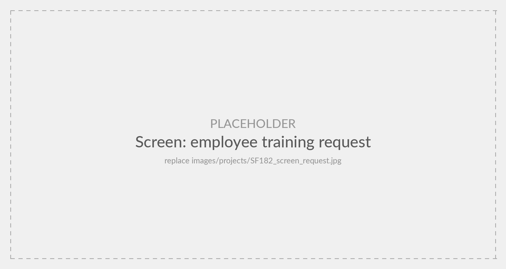
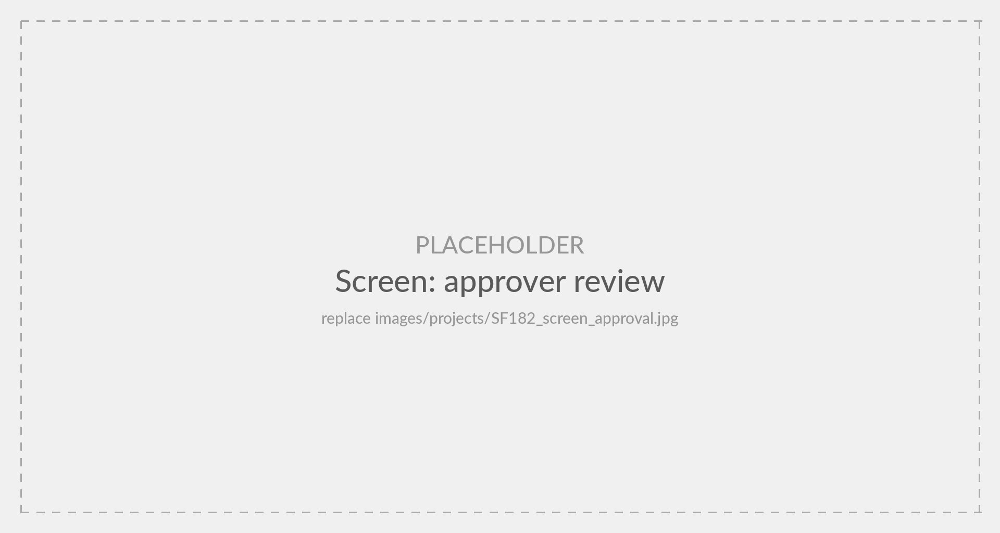

Statement of Originality & Confidentiality
To comply with my non-disclosure agreement, I have omitted and obscured confidential information in this case study, including customer names and real data. All the below information belongs to the organization whose name appears on the document and is to be treated as confidential. It is used to demonstrate my work experience and related skills. Please do not disclose any information to any person or persons who would use it for the purpose outside the possibility of employment.
OVERVIEW
The SF 182, Authorization, Agreement and Certification of Training, is the standard form US federal agencies use to request, approve and record training for their employees, especially external training paid for with agency funds. For many agencies it was still a paper form that travelled from desk to desk for signatures, was re-keyed into other systems and was hard to track.
Totara is a learning, performance and compliance platform used by organisations worldwide.
TotaraGov brings it to US federal and state government agencies.
Our government customers wanted the whole SF 182 process, from the employee's request through approvals to completion, to live inside the learning platform their people already use. My goal was to replace the paper form with a digital workflow that stays true to the official form, while removing the chasing, re-keying and lost paperwork. [Optional: when it launched / how long the project ran]

From a paper form to a guided digital request
CHALLENGE
A single SF 182 passes through many hands: the employee, their supervisor, training officers, funding approvers and sometimes more. Every agency sets up that chain a little differently, and the form carries strict rules about funding, service agreements and record keeping. The digital version had to feel familiar to people who know the official form, work for every agency's approval process, and fit naturally inside Totara so it felt like part of the product rather than a bolt-on. [Add any specific constraint: timeline, compliance, accessibility (Section 508), legacy data]
“Turn a form that travels from desk to desk into a process everyone can see.”
MY ROLE & DESIGN PROCESS
I owned the design side of SF 182 in TotaraGov and the end-to-end experience, from the employee's first request to the final record. I worked closely with product owners and our US government customers, and handed designs over to the development team built from the Totara UI Kit design system.
I partnered with product on discovery workshops, research and journey mapping, so that design decisions were grounded in how agencies actually process training requests.

Discover
Understanding the form
I started with the official SF 182 itself: every section, field and signature, and why each one exists. This showed which parts the employee fills in, which belong to approvers and training officers, and which data agencies need to report on later.
Discovery workshops & research
Together with the product owners, I ran discovery workshops and research sessions with our government customers to understand how requests move through their agencies today, who is involved, and where things get stuck. [How many agencies / sessions / people?]
Key Insights
[Check these match what you found, and edit]
• Employees can't see where their request is once they hand it over.
• Each agency has its own approval chain and roles.
• Approvers need cost, dates and justification in one place to decide quickly.
• Training officers re-key form data into other systems for reporting.
• People know the official form well, so its structure and wording need to stay recognisable.

End-to-end journey map, from request to completion
Define
Journey mapping
We mapped the full journey across every role, from the employee finding training and submitting a request, through each approval, to completing the training and closing the record. This gave the team and our customers one shared picture of the process.
Roles & approval flows
I defined the roles involved and the approval flows between them, including what each person needs to see and do at their step, and how the flow could be set up to match each agency's own chain.
Key Decisions
• Break the long form into clear, guided steps for the employee.
• Show the status and the next approver at every stage.
• Let administrators set up approval stages to match each agency.
• Keep a full record of who approved what, and when.

Approval flow and roles
Design
Wireframes
I explored the key screens as wireframes: the employee's request, the approver's review and the status view. These were reviewed with product owners and customers early, so we could change direction cheaply.
Prototype & validation
The refined designs were turned into clickable prototypes in Figma and walked through with customers to check the flow matched how their agencies work. [What changed after feedback?]
Design system & handover
The final designs were built from Totara UI Kit components so they stayed consistent with the rest of Totara and were faster to build. I worked with developers through handover and build to make sure the experience shipped as designed.

Wireframes of the key screens

Employee: guided training request

Approver: everything needed to decide, in one place
Status and approval history
OUTCOME
SF 182 now runs end to end inside TotaraGov, replacing the paper form for our government customers. Employees can submit and track their training requests, approvers act on them in one place, and every step is recorded. [Add results: agencies using it, number of requests, time saved, feedback from customers]
REFLECTION AND NEXT STEP
[Your reflection: what you learned designing for government, what you'd do with more time, e.g. more research with approvers or measuring turnaround times after launch]